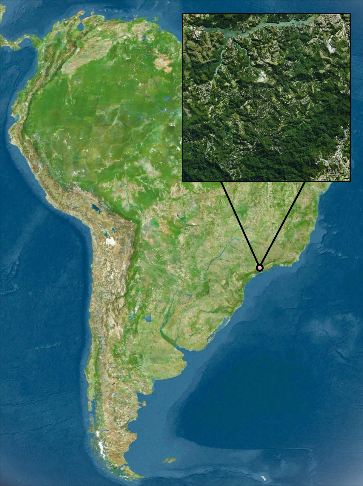
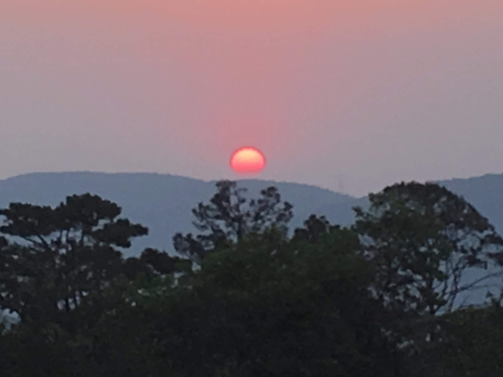
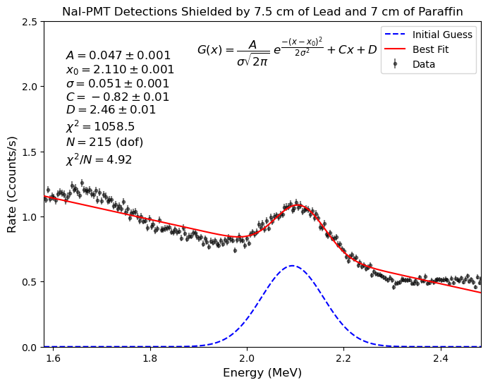
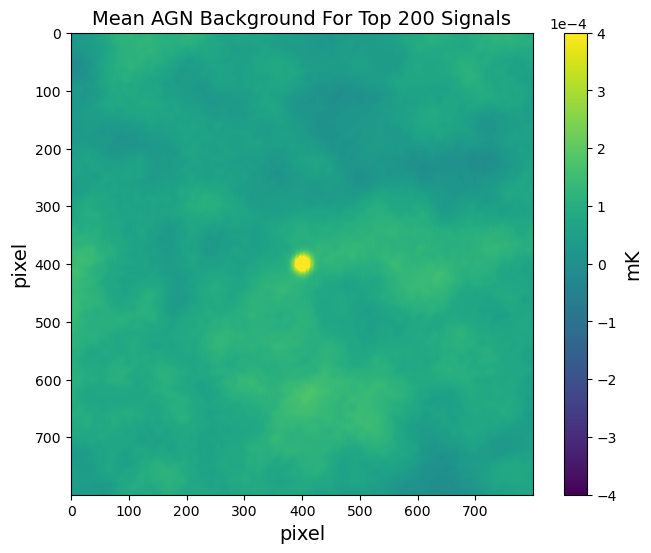
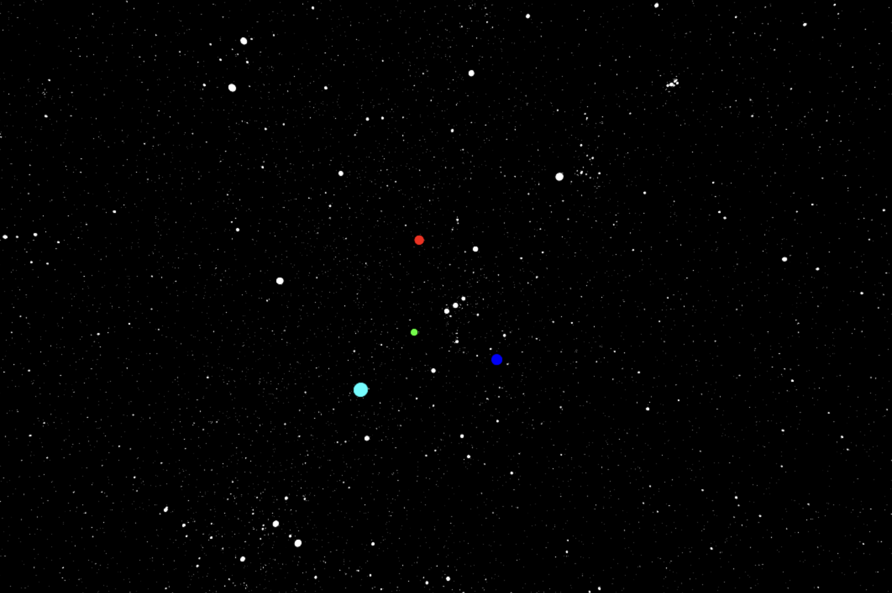
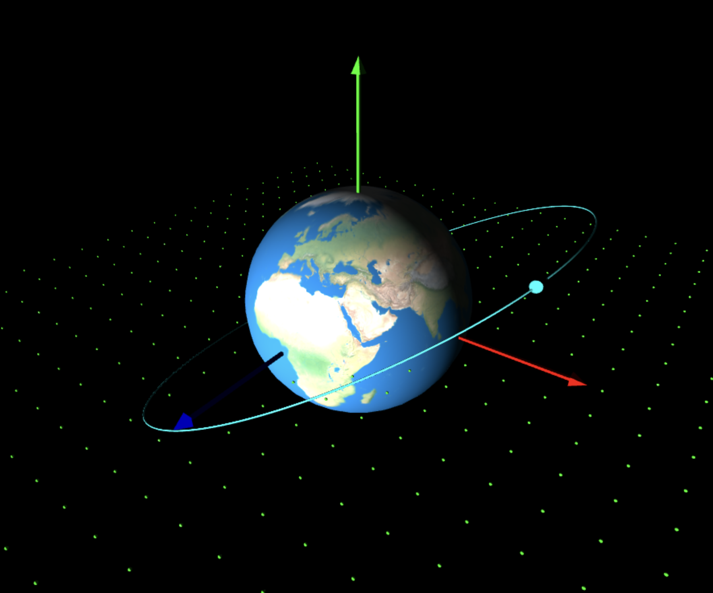

Hi, I'm Fabrizio.
Hi! My name is Fabrizio. I am originally from a small town in Brazil called Mairiporã, which means beautiful water of Maíra in Tupi. I have a B.S. in Physics and Mathematics from The University of Chicago.
 More About MeGrowing up at the heart of the Atlantic Florest meant living around thousands of plant and animal species, but it also meant being far from modern infrastructure and services. My house didn't have access to WI-FI untill 2018, when I was 15. I remember 2018 well because it was the year my high-school physics teacher gave me a single volume physics textbook, It was the year I got my first computer, and it was the year that I participated in my first astronomy olympiad.
During the two years that followed, I had the privilege to participate in two international astronomy olympiads. In 2021, I was accepted to The University of Chicago, now my alma mater.
My Areas of Interest and Experience.
My fundamental interests are in general relativity and mathematical physics. During my undergraduate career, however, I've explored a wide range of different fields.
View AllFluid Dynamics

If you are ever out in the rain you may notice that water has this tendency of forming drops. The water from the rain itself comes in drops, and so does the water that falls from the leaves of a tree or the water that drips from the rooftop. This type of behavior, as a matter of fact, is not limited to water and occurs with all kinds of fluids. But why? Why does a falling stream of liquid break up into droplets and what does it look like?
Nuclear Physics
The mass of charged fundamental particles, such as protons and electrons, can be measured by sending them through a magnetic field and determining the radius of curvature of their path (this technique is known as mass spectrometry). But what if you want to measure the mass of the neutron? They are neutral particles and so they don't experience a Lorentz force. If you were to send neutrons through a magnetic field their paths wouldn't be affected at all, so mass spectrometry doesn't work for them. What do we do when things don't go our way? We smash them! In this case we smash neutrons and protons to produce deuteron.
Observational Cosmology
 How does the AGN feedback effect change the shape of the total matter distribution in galaxies and galaxy clusters? To understand the impact of this AGN feedback effect, we must first understand where they are located. One question we have is how often do we find AGNs in a cluster or galaxy sample that we are interested in?
Astronomy Education.
I'm continuously developing educational astronomy resources. I like to experiment with different forms of exposition and visualization.
View AllPlanetarium with Interstellar Positional Astronomy (PIPA)
Have you ever wondered what the night sky from other stars would look like? And what does the Sun look like from another star? I created a program that does just that. PIPA (Planetarium with Interstellar Positional Astronomy) is a free open source planetarium program based entirely on Python3. It uses the astrometric data from the High Precision PARallax COllecting Satellite (Hipparcos) mission to show in 3D what the sky from other stars would look like.
From Barnard's Star (HIP 87937) the Sun, shown in green, is in Orion. Sirius, shown in light blue, is shifted closer to Orion but still belongs to Canis Major. Betelgeuse is shown in red and Rigel is shown in blue.
Orbital Elements
I wrote this code to help me and other students visualize what real orbits really look like. All so often we see orbits displayed in a 2D plane that it is easy to forget that real orbits are tridimensional. And so when we start talking about things like the argument of periapsis or the longitude of the ascending node, students tend to be confused. Another motivation behind this code was to have a convenient way to compute the orbit of a satellite from a single observation of its position and velocity.
